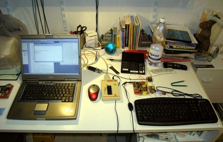
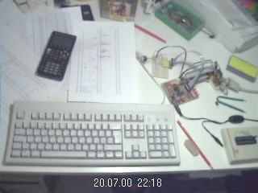
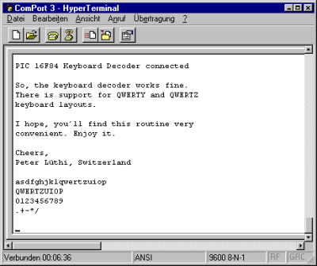
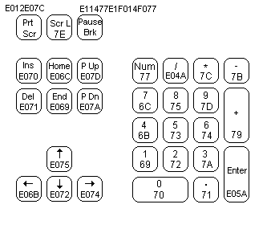
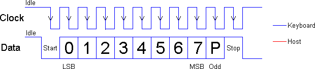
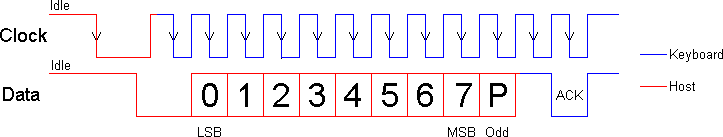
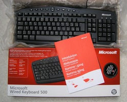
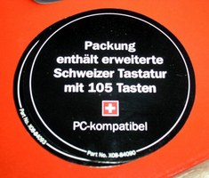
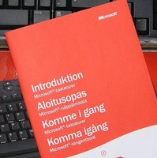

for Microchip PIC16F84 (without
LCD)
Introduction
Possible Applications
Concept
How it works
Specifications
Features
Limitations
AT Keyboard Theory
Keyboard Scan Codes
Keyboard to Host Protocol
Keyboard Commands
Host to Keyboard Protocol
Host Commands
Project Resources
Available PIC Assembler
Code
Schematic, Data Sheets, Pinout
User-specific Customization / FAQ
How do I use the AT Keyboard
Input?
How does the Scan Pattern
Decoding work exactly?
My own Key Customization
My own Key Sequence
Confusion about Sweden and Switzerland...?
Sometimes you only need a simple and cheap RS232 terminal to get sufficient control over a PC or a RS232 device. There is no need, no space or even no power to place a monitor, a computer case and a keyboard. Maybe there exists also the problem, that the PC or the device is located somewhere else and you want to interact with it over a short distance.
The cheapest way to obtain a complete user interface is the
use of standard components, such as LCD modules and PC keyboards.
A standard PC keyboard (PS/2 type) costs about US-$ 12, a
2 lines by 40 characters dot matrix LCD module around US-$ 20.
To connect these items to the serial port by cable, a microcontroller
and a RS232 level shifter are necessary. For longer distance control,
there exists also the possibility to interconnect the terminal
with the other device by a wireless physical transmission layer.
The RS232 terminal for instance is very convenient in conjunction with a PC based Juke-Box playing MP3 files. You only need a command line programmable MP3 player (or a player with a supplied Active-X interface) and a software-based connection between player and RS232 port. This software 'connection' could be realized using Visual Basic and the often supplied Active-X interfaces of the various Windows based MP3 players.
Another possible area for applications is PC observed access control. Therefore, the RS232 terminal is placed at the entrance to the supervised area.
A further enhancement to be able to satisfy todays needs for
network-based communication would be a complete TCP/IP
based communication layer together with an Ethernet front-end.
Then it would be possible to control simple Ethernet appliances,
e.g. your coffee maker, electrical rolling shutters, autonomous
net-based lawn mower,... ;-) by this remote terminal. Brave new
world ...
The routine below contains no support for an LCD display. It only shows the complete fetch and decoding of AT keyboard scan patterns and RS232 transmission of ASCII characters to the RS232 client. If you want a PIC 16F84 based solution with additional LCD, have a look at the keyboard v2xx project.
The problem with the PIC 16F84 is the lack of RS232 hardware. The whole keyboard scan pattern fetch, decode and RS232 data transmission is done by software. Additional RS232 data reception has also to be carried out by software - based on interrupts - but is not implemented within this project. The current implementation features a preemptive interrupt-based keyboard scan pattern acquisition.
|

A recent picture of my workplace connecting a Microsoft PS/2 AT keyboard to the PIC16F84. |

An elderly picture of my workplace, at which the initial development took place. |
Any key stroke on the local keyboard will send the corresponding
scan patterns from the keyboard to the PIC microcontroller. Afterwards,
the microcontroller converts the keyboard scan patterns to ASCII
characters and transmits them to the RS232 target device.
The keyboard scan code capture is done by an interrupt service
routine (ISR). The event, which triggers the interrupt is a falling
edge on the keyboard clock line (PORTB,0). Keyboard scan pattern
acquisition takes place at the keyboard data line (PORTA,4). After
11 clocks (i.e. 11 external interrupts on RB0/INT), the interrupt
service routine has completely captured an 8 bit element of the
entire scan pattern and sets a ready flag. The decoding of this
8 bit element is then carried out during normal operation mode,
activated by a valid ready flag whilst keeping the keyboard stalled
(keyboard clock line low).
The fact, that the scan pattern acquisition is carried out
using an interrupt service routine and the decoding thereof is
done during normal operation mode allows for performing other
tasks concurrently: That's why I call the acquisition methodology
preemptive, it does not block the processor in the main
loop while acquiring keyboard data - therefore passing processing
resources to other services. Explicitely, it works as follows:
After proper acquisition, the corresponding flag KBDflag
is set (at the end of the ISR) and the decoded keyboard character
resides in the register KBD. The KBDflag is cleared
at the end of the service routine KBDdecode.
|
Infinitive main loop to acquire keyboard input (keyboard_v1xx.asm), keyboard data is in register KBD: ;******************************
_MLOOP btfsc KBDflag ; check scan pattern reception flag
call KBDdecode ; if set, call decoding routine
;btfsc your_other_flag
;call your_other_service
goto _MLOOP
;******************************
|
Only RS232 transmission is supported by this program, since PORTB,0 interrupt is already used by the keyboard clock line. There exists no possibility to implement also RS232 reception using my modules m_rsxxx.asm, because they require PORTB,0 as well and are laid out as non-preemptive data acquisition routines (see also 'Limitations').
For dedicated code adaptations, please refer to the section
'User-specific Customization'
below.
| Processor: | Microchip PIC 16F84 |
| Clock Frequency: | 4 MHz crystal |
| Throughput: | 1 MIPS |
| RS232 Baud Rate: | 9600 baud, 8 bit, no parity, 1 stopbit |
| Code Size of entire Program: | 523 instruction words |
| Keyboard Routine Features: | Capability of uni-directional communication between microcontroller and keyboard |
| Acquisition Methodology: | Preemptive, interrupt-based keyboard scan pattern acquisition, decoding to ASCII characters during normal operation mode activated by ready flag |
| Required Hardware: | AT keyboard, PS/2 connector, MAX232 |
| Required Software: | RS232 terminal software (or Excel 97 RS232 Debug Interface) |
To visualize the ASCII data sent by this microcontroller application, use a terminal program like the Windows Hyperterminal. Below an example session, which proves the correct functionality of the keyboard interface. This terminal program and the Excel 97 RS232 Debug Interface have been used to debug the interface during implementation time.

Example of a session using the Windows HyperTerminal. The
entire contents was sent by the PIC controller.
In case you want RS232 reception and keyboard decoding simultaneously
on a single PIC 16X84, you'll have to configure either the keyboard
clock line or the RS232 reception data line (both targeting PORTB,0
interrupt) to another separate interrupt source (e.g. PORTB,4
- PORTB,7 change interrupt) and to alter the RS232 data fetch
routine to a preemptive one. But then you'll also run into troubles
by using the LCD modules, because they are written to work on
entire 8 bit ports (such as PORTB on 16X84, and PORTC & PORTD
on 16X74).
So if you really appreciate to run the RS232 terminal entirely
on a PIC 16X84 - from a technical perspective it is possible
- you'll have to rewrite the LCD modules and the software RS232
reception routine. Be aware that there won't be a lot of code
space remaining for other enhancements after putting all terminal
related stuff onto the 16X84.
A workaround to get RS232 reception on the PIC 16X84 using this software could be a solution based on polling. But make sure you are polling fast enough, also in worst case.
|
Important note from Jason Plumb: «Hey, First, lemme say that I like your site and thank you for providing excellent reference material for us home-hobbyist microcontroller geeks. I am currently working on a music/noise project that uses a PS/2 keyboard interfaced to a PIC16F84, and I used your page at http://www.electronic-engineering.ch/microchip/projects/keyboard/v1xx/keyboard_v1xx.html heavily as a reference when designing hardware and writing code. Anyway, I just thought that I would mention that I ran into a problem that I have since solved. The problem involved sending bytes *TO* the keyboard from the PIC (in order to light NumLock and ScrollLock). Your "Host To Keyboard Protocol" section indicates that the keyboard will take the data line low for a clock after the byte is sent to create an ACK bit. Apparently, the PS/2 keyboard that I have (generic $10 comp-USA brand) doesn't send an ACK bit, but rather sends a whole byte. If my code attempted to wait for the ACK bit, it hung indefinitely. I changed the wait to look for a byte (by calling my existing function) and everything worked perfectly. I stumbled on this idea by looking at other online references (most notably, some Linux kernel code at http://www.mscs.mu.edu/~georgec/Classes/207.1998/14Minix_book/S/src%20kernel%20keyboard.c.html#307). I have seen this ACK *byte* mentioned elsewhere too. I *think* the keyboard sends back 0xFA as an ACK byte, but I have not personally confirmed this. Perhaps your excellent documentation could just use a quick note of clarification so that other don't run into the same problem. Maybe something as simple as: "NOTE: Some keyboards send an ACK byte (value 0xFA) instead of an ACK bit.". Thanks again, |
Note from the author:
The comment above refers to bi-directional communication between PIC microcontroller and AT keyboard, i.e. to the source code of the AT Keyboard Interface V2.xx and higher versions. The bi-directional communication between host and keyboard is designed to support both Ack bits and Ack bytes.
A corresponding PIC assembler code example is shown below:
;*** switch keyboard LEDs on (default status) ***
KBDcmd 0xED ; keyboard LEDs' control command
KBDexp 0xFA ; expect keyboard acknowledge (FA)
movfw KBDleds ; load keyboard LEDs' status
KBDcmdw ; send keyboard LEDs' control data
KBDexp 0xFA ; expect keyboard acknowledge (FA)
|
However, some AT keyboards may behave different and may need code adaptations to get bi-directional communication working properly.
A complete functional description and timing diagram of the
AT keyboard is available at Craig Peacock's website. Please refer
to his website Interfacing the PC's Keyboard for an excellent
and comprehensive description of all features and commands of
the AT keyboard. At this place, I want to thank Craig Peacock
for his outstanding work with his website.
Below I only want to sketch the most important technical aspects
to be known when interfacing a PC's keyboard. Small parts of the
introduction below are more or less copied from Craig Peacock's
tutorial.
The diagram below shows the scan codes assigned to the individual
keys for the english keyboard layout. The keys' corresponding
scan codes are the numbers on the keys, for example the scan code
of the ESC key is 0x76. All scan codes are shown in hexadecimal
representation.
The scan code assignments are quite random (thanks to IBM and
other early computer manufacturers) and appear to be really weird
sometimes, for instance the break key. In many cases the easiest
way to convert the scan code to ASCII characters would be to use
a lookup table. Below are the scan codes shown for the extended
part of the keyboard and the numeric keypad.
Cite of Craig Peacock: "How about E1,14,77,E1,F0,14,F0,77! Now that can't be a valid scan code? Wrong again. It happens to be sent when you press the pause/break key. Don't ask me why they have to make it so long! Maybe they were having a bad day or something?"
By the way, AT stands for Advanced Technology...

The AT keyboard sends different scan codes on pressing, holding and releasing of each button. An example is given at the table below:
| Press & Hold Down Scan Code | Release Scan Code | |
| Normal Scan Code | 73 | F0 73 |
| Extended Scan Code | E0 4A | E0 F0 4A |
All scan patterns can easily be visualized and verified with the
AT Scan Code Debug Routine
and the RS232
Debug Interface.
The data transfer is implemented as bi-directional protocol: The keyboard can send data to the host (microcontroller) and the host can send commands and data to the keyboard. The host has the ultimate priority over the direction. It can at anytime (although not recommended) send a command to the keyboard.
The keyboard is free to send data to the host when both KBD data and KBD clock lines are high (idle). The serial clock is generated by the keyboard, but the host can also use it as a clear-to-send line: If the host takes the KBD clock line low, the keyboard will buffer any data until the KBD clock is released, i.e. goes high. Should the host take also the KBD data line low, then the keyboard will prepare to accept a command from the host.
The transmission of data in the forward direction, i.e. keyboard
to host, is done with a frame of 11 bits. The first bit is a start
bit (logic 0) followed by 8 data bits (LSB first), one parity
bit (odd parity) and a stop bit (logic 1). Each bit has to be
read on the falling edge of the clock.

AT keyboard to host protocol, with odd parity bit
Once the host commands are sent from the host to the keyboard,
the keyboard commands must be
sent from the keyboard to the host. If you think this way, you
must be correct. Below details of some of
the commands which the keyboard is able to send.
| FA | Acknowledge |
| AA | Power on self test passed (BAT completed) |
| EE | See echo command (host commands) |
| FE | Resend - upon receipt of the resend command the host should re-transmit the last byte sent. |
| 00 | Error or buffer overflow |
| FF | Error or buffer overflow |
The host to keyboard protocol is initiated by taking the KBD
data line low. However to prevent the keyboard from sending data
at the same time that you attempt to send the keyboard data, it
is common to take the KBD clock line low for more than 60 us.
This is more than one bit length. Then the KBD data line is taken
low, while the KBD clock line is released. The keyboard will start
generating a clock signal on its KBD clock line. This process
can take up to 10 ms. After the first falling edge has been
detected, you can load the first data bit on the KBD data line.
This bit will be read into the keyboard on the next falling edge,
after which you can place the next bit of data. This process is
repeated for all 8 data bits. After the data bits comes an odd
parity bit.

Host to AT keyboard protocol, with odd parity bit and acknowledge
Odd parity = NOT(XOR(bits[0..7]))
Once the parity bit has been sent and the KBD data line is
in a idle state (high) for the next clock cycle, the keyboard
will acknowledge the reception of the new data. The keyboard does
this by taking the KBD data line low for the next clock transition.
If the KBD data line is not idle after the 10th bit (start, 8
data bits, and parity bit), the keyboard will continue to send
a KBD clock signal until the KBD data line becomes idle (Note: see also Limitations).
These commands are sent by the host to the keyboard. The most common command would be the setting/resetting of the status indicators (i.e. the Num lock, Caps Lock & Scroll Lock LEDs). The more common and useful commands are shown below.
| ED | Set status LED's - This command can be used to turn on and off the Num Lock, Caps Lock & Scroll Lock LED's. After sending ED, keyboard will reply with ACK (FA) and wait for another byte which determines their status. Bit 0 controls the Scroll Lock, bit 1 the Num Lock and bit 2 the Caps lock. Bits 3 to 7 are ignored. |
| EE | Echo - upon sending an echo command to the keyboard, the keyboard should reply with an echo (EE). |
| F0 | Set scan code set. Upon sending F0, keyboard will reply with ACK (FA) and wait for another byte, 01-03 which determines the scan code used. Sending 00 as the second byte will return the scan code set currently in use. |
| F3 | Set typematic repeat rate. Keyboard will acknowledge command with FA and wait for a second byte, which determines the typematic repeat rate. |
| F4 | Keyboard enable - clears the keyboard's output buffer, enables keyboard scanning and returns an acknowledgment. |
| F5 | Keyboard disable - resets the keyboard, disables keyboard scanning and returns an acknowledgment. |
| FE | Resend - upon receipt of the re-send command, the keyboard will re-transmit the last byte sent. |
| FF | Reset - resets the keyboard. |
Please refer to Craig Peacock's website for more information:
Interfacing
the PC's Keyboard
| Main File | Main Keyboard Decode Lookup Table | SHIFT Keyboard Decode Lookup Table | HEX Files |
|
Latest version: kbd_1xx.asm |
English 'codepage' (QWERTY) View: eng_main.html Download: eng_main.asm |
English 'codepage' (QWERTY) View: eng_shif.html Download: eng_shif.asm |
QWERTY 'codepage': QWERTZ 'codepage': |
|
Modified Swiss German 'codepage' (QWERTZ) View: ger_main.html Download: ger_main.asm |
Modified Swiss German 'codepage' (QWERTZ) View: ger_shif.html Download: ger_shif.asm |
||
| The above programs need additional include files (modules) to get successfully assembled: m_bank.asm, m_wait.asm, m_rs096.asm | |||
| For those, who are not familiar with interfacing a PIC to the RS232 using a MAX232: RS232-Interface.pdf (9.7 kB) | |||
AT Keyboard Specification (PDF, 189 kB)
The schematic of the AT keyboard interface using the PIC 16F84: Keyboard_V1xx.pdf.
You don't know how a dot matrix LCD is working? Have a look at my data sheets page.
Download ASCII Character Map: ASCII-Map.pdf
You can get the pinout and a description of the various keyboard
connectors <here>.
This section covers important details of the code structure.
For a high level view, please refer to the section 'How it works' above. Basically, I have written
this keyboard project in such a way that it is completely customizable
depending on your programming/PIC assembler skills.
Question: I'm running your AT Keyboard code. But how do I use the decoded input of the AT keyboard...?
Answer: The decoded content resides usually in the register
KBD. You can use the content of this register in the main
routine in the infinitive loop. Please see the section 'How it works' above.
Question: How does your AT scan pattern decoding work exactly? You are using two strange look-up tables...
Answer: Have a look at some parts of the 'AT Keyboard Lookup Table', e.g. the eng_main.asm (QWERTY):
The simple lookup table decoding is done with retlw x and DT x. These directives just return the corresponding ASCII character. The more sophisticated decoding is done with subroutines, i.e. goto _XYZ. This means for instance that for a ENTER/RETURN key hit on the keyboard, the subroutine _CRLF is executed (carriage return, line feed) and for ALT, CTRL, SHIFT and CAPS_LOCK, the corresponding flags are set in their corresponding subroutines.
|
Because the keyboard sends slightly different scan patterns for both, key hit and key release, there is need for a key release handling. This is done with the so-called release flag. So for every single character typed, the interrupt service routine is called twice (due to two different scan codes for hit and release) and the scan pattern decoding routine is executed twice.
|
There are these four main code blocks in the keyboard assembler source:
To save code space, I've implemented the two look-up tables (main and shift) as follows:
If you apply changes to the existing code, you may need to
change the ORG directives in order to realign the assembler code
properly, due to the different lookup tables and the PIC page
boundaries.
Question: I have built successfully your AT keyboard
project and it is running very well.
Now I want to customize my code such as to print out a predefined
phrase e.g. 'Hello World' whenever I hit a specific key...?
Answer: This is not a difficult task, if you just use
one specific key, for instance F9.
(For sequences like 'asdf', you must write your own detection
routine for the main loop by checking the values in register KBD.)
First look at the look-up tables (LUT), for instance the eng_main.asm (QWERTY):
It is essentially a LUT which performs the decoding of the
acquired keyboard scan codes into characters. At the top, the
entries for the F1-F12 function keys are located.
If you want a specific text to be displayed by pressing F9, change
the line
retlw A'9' ; F9 -> 9 0x01
KBDtable ; (not used for characters typed with shift button active)
addwf PCL,F
retlw 0 ; invalid entry
retlw A'9' ; F9 -> 9 0x01
retlw 0 ;
retlw A'5' ; F5 -> 5
|
to
goto _MyRoutine
KBDtable ; (not used for characters typed with shift button active)
addwf PCL,F
retlw 0 ; invalid entry
goto _MyRoutine ; NEW: user-specific decoding for F9
retlw 0 ;
retlw A'5' ; F5 -> 5
|
Then you implement your own key-specific handler/subroutine _MyRoutine in the main file (section sub-routines), which displays your string, e.g. something like:
_MyRoutine
SENDw 'H' ; send to RS232
SENDw 'e'
SENDw 'l'
SENDw 'l'
SENDw 'o'
SENDw ' '
SENDw 'W'
SENDw 'o'
SENDw 'r'
SENDw 'l'
RETLW 'd' ; return with last character in w
; alternative termination:
; SENDw 'd'
; RETLW 0 ; clear w to obtain invalid entry
|
You can do anything in this routine, just terminate with a
RETLW 0 and ensure not to change any reserved registers...
If you want to alter the output for the keyboard characters in
general, look at the the '_OUTP' section in the assembler source
file kbd_1xx.asm:
_OUTP ;*** RS232 ***
movfw KBD
SENDw ; send actual pressed keyboard character
goto _ClrStall
|
There, the acquired keyboard character (in KBD) is sent to
the RS232 interface.
If having a LCD display, the value of KBD might also be displayed
using:
_OUTP ;*** LCD & RS232 ***
movfw KBD
LCDw ; display keyboard character on LCD
movfw KBD
SENDw ; send actual pressed keyboard character
goto _ClrStall
|
This is roughly what is done in the '_OUTP' section in the
assembler source file kbd_2xx.asm.
Question: I have built successfully your AT keyboard
project and it is running very well.
Now I want to customize my code such as to detect a specific key
sequence, e.g. 'asdf'. Is this feasible...?
Answer: This is a more challenging task. (Alternatively,
consider to just use one specific key e.g. F9 as described above.)
You need to write your own subroutine in the main loop in order
to detect the desired character sequence. The keyboard character
is usually passed within the register KBD.
;******************************
_MLOOP btfsc KBDflag ; check scan pattern reception flag
call KBDdecode ; if set, call decoding routine
;btfsc your_other_flag
;call your_other_service
goto _MLOOP
;******************************
|
Do you know Microsoft? Are you a global player, too?
Or do you travel sometimes to Europe?
Did it happen to you, that you ended up in Stockholm instead of
Zurich?
Don't worry, even Microsoft is confused by the two european
countries, Sweden and Switzerland.
You are excused as well if you mix this up...
|  |  |  |
|
Microsoft Wired Keyboard 500 I recently bought two cheap, but nice Microsoft PS/2 keyboards - before PS/2 products are fading out. Microsoft obviously does not know the difference between Sweden and Switzerland: They supplied a skandinavian manual (swedish, norwegian, danish, finnish) instead of a central europe one (german, french, italian, english). Ok, it could have been worse: they could have shipped a japanese keyboard layout... |
||
Last updated: 23.04.2006